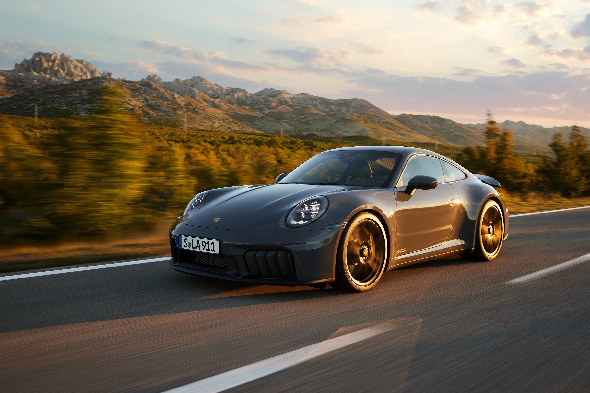
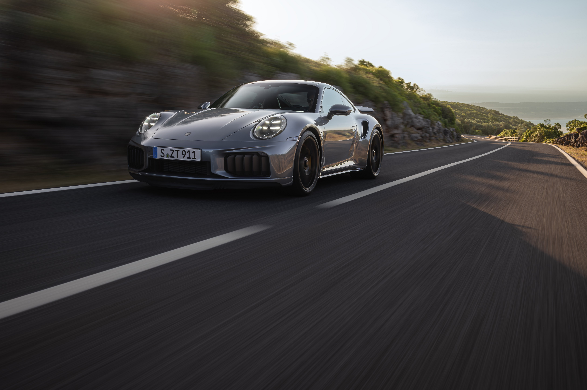
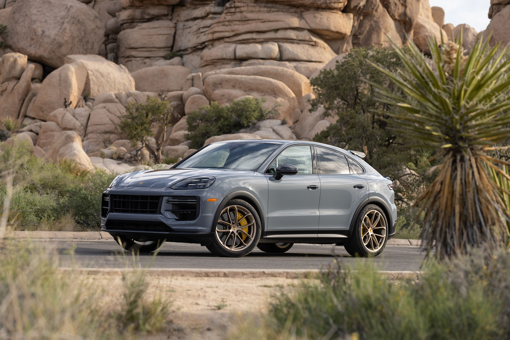

Rear-engine benchmark
911 Carrera
Twin-turbo flat-six response, rear-axle traction, and the familiar 911 driving position.
- Power
- 394 PS
- 0-100
- 4.1 s

PDS / Monochrome Performance
A low-glare performance interface built around mechanical clarity, exact visual rhythm, and the confidence of a car held in reserve.
Heritage preview
Reduced surfaces keep attention on proportion, traction, and feedback: the familiar engineering signals that make speed feel measured rather than loud.
Explore heritage
Featured models
Three calibrated expressions of Porsche performance, separated by layout, power delivery, and intent.
Twin-turbo flat-six response, rear-axle traction, and the familiar 911 driving position.
Mid-engine geometry, a 4.0-litre flat-six, and compact inputs tuned for precision.
Dual-motor traction, 800-volt charging, and Performance Battery Plus range calibration.
Performance preview
Twin-turbo flat-six with all-wheel drive traction
Naturally aspirated flat-six, mid-engine layout
Electric overboost in Attack Mode, variant dependent
Endurance pace measured by consistency under pressure
Motorsport preview
Prototype endurance, GT racing, and electric competition create a shared engineering language: stable aero, repeatable braking, and lap-after-lap focus.
Enter motorsportGallery preview

Configurator
Choose model, paint, wheels, interior, and package in a restrained concept configurator built to feel precise, not playful.
Start configuring